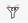

CrowdFilter Einführung
CrowdFilter Einführung
Auf dieser Seite - welche nach der Installation und einem Update des Addons erscheint - findest du eine kurze Einführung in die Nutzung des Addons.
Einführung
Mit Hilfe dieses Addons hast du die Möglichkeit, Input in unseren Text-Klassifikationen-Datenbestand zu geben. Funktioniert ganz einfach! Jetzt wo das Addon installiert ist, markiere einfach den folgenden Text:
Eine neue Studie hat gezeigt, dass das tägliche Zeitungslesen nicht zur Allgemeinbildung beiträgt.
Markiert? Dann einfach rechtsklicken, CrowdFilter auswählen und im erscheinenden Menü auf Fake News klicken.
Das war's! Nun würde deine Text-Auswahl zusammen mit der aktuellen URL und dem Seitentitel übermittelt werden. Nach der Aktivierung des Addons durch einen Klick auf den Button unten kannst du in den Einstellungen des Addons sehen welche Daten bereits gesendet wurden. Die Einstellungen erreichst du auch durch einen Klick auf das -Icon in der Toolbar.
Im Laufe des Projekts werden wir evaluieren, ob sich die gesammelten Daten dazu nutzen lassen Filterlisten zu erstellen. Diese Listen könnten dann, wie z.B. auch bei Adblockern, in den Client geladen werden und zum Filtern von ungewünschten Textinhalten genutzt werden - jedoch auf Client-Seite und nicht beim Anbieter.
Zum Abschluss möchten wir nochmal sicher gehen, dass du mit der Übermittlung dieser Daten einverstanden bist:
Danke für deine Unterstützung!